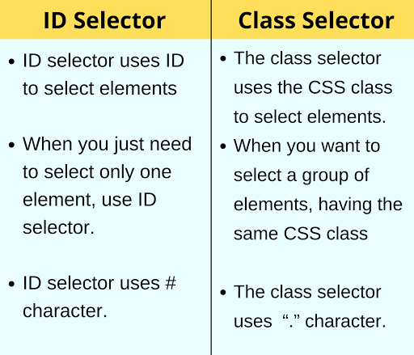

Best practices associated with using classes vs. ids
2 July 2022There are three cornerstones technologies of the World Wide Web: HTML, CSS, and JavaScript. HTML (HyperText Markup Language) specifies the content of web pages. CSS (Cascading Style Sheet) specifies the presentation or styling of web pages, and JavaScript specifies the behavior or action of web pages. It sets the background color, font-size, font-family, color and other properties of elements on a web page. CSS can be placed inside or outside of the HTML file.
In an HTML, an element is defined by a start tag, some content, and an end tag. In CSS, “selectors” are used to target these HTML elements on our web pages that we want to style. There are a wide variety of CSS selectors available, allowing for different targeting and precision when selecting elements to style.
Classes vs IDs
Two of these selectors, class and id , are used to apply styles to elements based on the class and ID assigned to an HTML element, respectively. Chris Coyier describes this well:
“Maybe a good analogy here is bar codes and serial numbers. Take an iPod in a store. On the packaging will be a bar code. This tells the store what the product is, so when it is scanned, the system knows exactly what the product is and what it costs. It might even be able to know what color it is or where it was kept in the store. All iPod of this same type have the exact same barcode on them. The iPod will also have a serial number on it which is absolutely unique to any other iPod (or any other device) in the world. The serial number doesn’t know the price. It could, but for the store this wouldn’t be a very efficient way to store and use that data. Much easier to use the barcode, so that for example, if the price changed, you could just change the price for that bar code and not every individual serial number in your system. This is much like ID’s and Classes. Information that is reusable should be kept in a class and information that is totally unique should be kept in an ID.”
- Coyier
IDs are unique and Classes are not unique to an element
IDs are unique and each element can have only one ID. Each page can have only one element with that ID. Yes, in the entire page. But you can use classes over and over.
<div id="list">
<h1> Rugby Awards </h1>
<p class="award"> Winner one </p>
<p class="winner"> Ben </p>
<p class="award"> Winner two </p>
<p class="winner"> Josh </p>
</div >
Setting Classes and IDs
This is an over simplification, but generally specifying css styling values for classes and IDs on the CSS file or styling blocks can be done this way:
.bigfont {
font-size: 4em;
}
a dot (.) is used to set a class
#bigfont {
font-size: 4em;
}
and # is used to set an ID
Now that we have covered basic overview of classes and IDs, let's discuss some best practices.
#1. Plan ahead so you don't over use classes and IDs
Classes and IDs are important and we rely on them to do page styling and manipulation, but making a class or ID for every small thing or segment will clutter your CSS and make yourself or others reading your code confused.
Planning is key so that you don't find yourselves with specificity conflicts between your classes, IDs, and other more general selectors.
Lastly, you don't want to over-identify something that is already clear from the anchor element itself. For instance (see below), here it is already clear that the >a> anchor element is a link. There is no need to be redundant in classing it as such.
<a href="https://bensonkawengian.com"
class="link">Bensonkawengian.com </a>
#2. Semantics or Words are important
Think about the objective, function and purpose for the classes and IDs so you can name them appropriately and succinctly. My research online suggests that many experts agree that shorter and more generic words are better. Use words that describe the context of the element. For example instead of naming them "right-col", you can consider "sidebar"
Keep track of your classes and IDs. I personally found it's useful to clearly identify and comment over them on my CSS sheet.
#3. IDs have a special browser functionality
While classes do not have this ability, the # hex value identifier that we use to set IDs can be used by the browser to locate that element. For example, If you have a URL like http://yourdomain.com#comments, the browser will attempt to locate the element with an ID of “comments” and will automatically scroll the page to show that element.
IDs are commonly used in that programming language. The function getElementById allows you to select an element on a web page. It relies on the fact that only one element can share the same ID.
#4. You can use both ID and CSS Class Selectors on a single element
Suppose you have a generic style assigned to a class "background-blue" but wants to a special modification or customisation to a particular div tag. However, when you do this, you need to remember that the ID must be unique for the element or on that page. You could do so using this code:
<div class="background-blue" id="custom-edit"></div>
Sources
- The Difference Between ID and Class
- Reasons not to use IDs in CSS
- CSS From Wikipedia, the free encyclopedia
- Best Practices for ID and Class Names
- CSS Tutorial on W3 Schools ID and Class
- ID vs Class CSS: Understanding the Differences